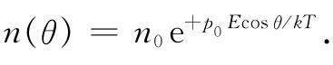

（11.18）
（11.18）其次，我们将考虑具有永久电偶极矩p0 ——如水分子那样——的分子。在没有电场时，各个偶极子指向处于无规方向，从而使单位体积内的净矩为零。但是当加上电场后会发生两件事。首先，由于场对电子施加了力，所以有额外偶极矩被感生，这部分给出的电子极化率，其种类恰巧与我们对非极性分子所求得的电子极化率相同。当然，对十分精密的工作，这一效应是应该包括进去的，但目前我们将加以忽略（在最后总是可以加上去的）。其次，电场倾向于将各个偶极子排列起来从而在每个单位体积中产生一个净矩。假使气体中所有偶极子都整齐地排列起来了，则会产生很大的极化强度，但这种现象却从未发生过。在通常温度和电场的作用下，分子因热运动而发生的相互碰撞使它们排列得很不整齐。但总会有某种净的取向，因而也就有某种极化（见图11-2）。这里出现的极化可以通过第1卷第40章中所描述的那种统计力学方法来加以计算。
图11-2 （a）在极性分子的气体中，各个偶极矩的取向是无规的，在一小体积里的平均矩为零；（b）当有电场时，分子们就有某种平均取向了
要运用这种方法就需要知道偶极子在电场中的能量。考虑一个电偶极矩p0 处在电场之中，如图11-3所示。正电荷的能量为qϕ（1），而负电荷的能量为-qϕ（2）。于是偶极子的能量为
U=qϕ（1）-qϕ（2）=qd·▽ϕ，
或
U=-p0 ·E=-p0 Ecosθ， （11.14）
其中θ是p0 与E间的夹角。正如我们会预料到的，当偶极矩沿着电场方向排列时其能量就最低。
图11-3 在场E中一个偶极子p0 的能量为-p0 ·E
现在，我们利用统计力学方法来求出会有多少取向排列发生。从第1卷第40章中就求得，在热平衡态具有势能U的分子其相对数目正比于
e-U/kT ， （11.15）
式中U（x，y，z）是作为位置函数的势能。相同的论证会说：若采用式（11.14）作为角度 函数的势能，则在角度θ处单位立体角 的分子数目正比于e-U/kT 。
令n（θ）为在角度θ处单位立体角的分子数目，我们便有
 （11.16）
对正常的温度和电场来说，这指数值很小，因此可以通过对指数函数展开而取其近似式
如果把式（11.17）对所有角度积分，则我们可以求得n0 。积分结果应恰好等于N，即单位体积的分子数目。cosθ遍及所有角度的平均值为零，因而这一积分就刚好等于n0 乘以总立体角4π。我们得到：
（11.18）
由式（11.17）可以看出，沿场取向（cosθ=1）的分子比逆着场取向（cosθ=-1）的分子要多，因而在任何含有许多个分子的小体积里每个单位体积都将有净的偶极矩——也即极化强度P。要算出P，必须得到单位体积内所有分子偶极矩的矢量和。由于我们知道这结果将沿着E方向，所以，我们将仅仅对这个方向上的分量求和（垂直于E的分量之和将为零）：
可以通过对整个角分布的积分而算出这个和。在θ处的微立体角为2πsinθdθ，因而
把由式（11.17）得到的n（θ）代入，我们有
上式很容易积分而给出：
（11.20）
由于极化强度与场E成正比，所以会有正常的电介质行为。并且，正如我们所预期的，极化强度与温度成反比，因为在较高温度时由于碰撞，不整齐排列的分子就多。这个1/T的依赖关系叫作居里定律。永久偶极矩p0 之所以出现平方有下述原因：在一给定电场中促使分子排列整齐之力与p0 成正比；而由分子排列整齐所产生的平均矩又与p0 成正比。于是平均感生矩就会正比于 。
现在应该试着看看式（11.20）与实验符合的程度怎样？让我们考察水蒸气的情况。由于还不知道p0是什么，所以就不能直接算出P来，但式（11.20）确实预言κ-1应与温度成反比，这点我们应该加以核对。
由式（11.20）得到
因而κ-1应正比于密度N，而反比于绝对温度。介电常量曾在几个不同压强和温度时测量过，对压强和温度的这种选取可使单位体积里的分子数能保持固定不变 [1] （注意！假如测量在恒压下进行，则单位体积里的分子数会随温度的升高而线性地减少，κ-1将按T-2 变化，而不是按T-1 变化）。在图11-4中，我们把从实验观测到的κ-1作为1/T的函数而图示出来。由式（11.21）所预期的那种依存关系遵循得很好。
图11-4 在不同温度下水汽介电常量的实验测量
极性分子的介电常量还有另一种特性——随外加电场的频率变化。由于分子具有转动惯量，要使那些笨重分子转向场的方向就需要一定的时间。因此，若所加电场的频率在微波区或者更高，则对于介电常量极性的贡献开始下降，因为分子不可能跟随变化。与此相反，即使高至光频，电子的极化率仍保持不变，这是由于电子惯性较小的缘故。